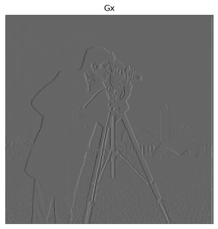

Original Image - Cameraman
Gx
Gy


This section demonstrates the Gaussian and Laplacian stacks generated for different images.


This section demonstrates blending images using Gaussian and Laplacian stacks.